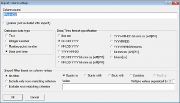

Začínáme
Systém LISp-Miner a proces DZD
Analytické procedury
Pokročilé funkce
Výzkum a vývoj
Začínáme
Systém LISp-Miner a proces DZD
Analytické procedury
Pokročilé funkce
Výzkum a vývoj
Pro načtení dat použijeme modul LM Workspace. Začneme načtením hlavního souboru Hotel.txt.
Protože jde o textový soubor ve formátu CSV, můžeme použít vestavěnou funkci systému LISp-Miner pro import dat z textového souboru. Import dat spustíme tlačítkem New from TXT v úvodním dialogovém okně po spuštění modulu LM Workspace.
 V dialogovém okně importu zkontrolujeme, že byly správně odhadnuty názvy a datové typy jednotlivých sloupců. V demonstračních datech by tomu tak být mělo, ale v praxi může docházet k celé řadě problémů – ať již jde o nutnou úpravu názvu sloupce, aby vyhoval standardu SQL, nebo o záměnu datového typu celé a desetinné číslo.
Zvláštní péči je také třeba věnovat sloupcům s hodnotami datum/čas. V našem případě jde o sloupec PPobytOd, který je ve formátu <den>.<měsíc>.<rok>.
Vypracováme-li zároveň i popis dat, můžeme si aktuální nastavení importovaných sloupců a jejich datových typů zkopírovat do schránky systému Windows a následně vložit do textu:
| ColID | Disabled | Name | Data type |
|---|---|---|---|
| 1 | HVek | Integer number | |
| 2 | HPohlavi | Text | |
| 3 | HMesto | Text | |
| 4 | HStat | Text | |
| 5 | HMesto_X | Decimal number | |
| 6 | HMesto_Y | Decimal number | |
| 7 | PTypPobytu | Text | |
| 8 | PPobytOd | Date/Time (DD.MM.YYYY) | |
| 9 | PNoci | Integer number | |
| 10 | POsob | Integer number | |
| 11 | PCenaUbytovani | Decimal number | |
| 12 | PCenaSleva | Decimal number | |
| 13 | PCenaStrava | Decimal number | |
| 14 | PCenaCelkem | Decimal number | |
| 15 | DHodnoceni | Text | |
| 16 | DPersonal | Integer number | |
| 17 | DStrava | Integer number | |
| 18 | DUbytovani | Integer number | |
| 19 | DZabava | Integer number |
V předaných datech se nevyskytuje žádný primární klíč. Proto zkontrolujeme, že je zaškrtnutá volba, aby byl do vznikající tabulky přidán umělý primární klíč (ID_LM).
Pozor! Používáme-li počítač s nastaveným anglickým jazykovým prostředím (a formátem datumu ve tvaru měsíc-den-rok), musíme pro správný import sloupců typu Datum/Čas zaškrtnout volbu Store dates in MM-DD-YYYY format.
Poznámka: Nemáme-li českou instalaci Windows a načítáme-li data s českou diakritikou, zaškrtneme volbu Convert to ASCII (remove Czech accents), aby se i v cizojazyčném prostředí zobrazovaly textové hodnoty v čitelné podobě.
 Před vlastním importem můžeme získat základní představu o hodnotách ve sloupcích pomocí tlačítka
Před vlastním importem můžeme získat základní představu o hodnotách ve sloupcích pomocí tlačítka Data Statistics.
Z jednoduché zprávy vidíme, že má být načteno 2000 záznamů a dále seznam načítaných sloupců. Pro každý sloupec je uveden počet různých hodnot a zda se v něm vyskytují prázdné hodnoty.
Statistiku je vhodné si zobrazit zejména v případě, že nastavujeme omezení na rozsah dat – jak na počet řádků, tak zejména na hodnoty ve sloupcích. Zobrazením statistiky můžeme zkontrolovat, že jsme omezení nastavili správně. Demonstrační data jsou však tak malá, že počet importovaných řádků nemusíme omezovat.
Nyní můžeme spustit import tlačítkem IMPORT DATA. Po chvilce by se měla objevit zpráva o úspěšném dokončení importu, podle které byly načteny všechny záznamy.
Po zavření zprávy se objeví dialogové okno pro vytvoření metabáze z dat v MDB souboru. V něm je přednastavený název právě vytvořeného souboru s daty a z něj i odvozený textový řetězec (angl. ODBC Data source name), pomocí kterého bude dvojice data+metabáze identifikována. V nastavení nemusíme nic měnit a pouze potvrdíme tlačítkem Ok.
Konečně se objeví hlavní obrazovka modulu LM Workspace a následně i zpráva, že v právě naimportované tabulce byl rozpoznán primární klíč a tabulka byla inicializována. Po jejím potvrzení se zobrazí záložka Tables se seznamem tabulek, ve kterém vidíme název tabulky Hotel.
Zbylé dva soubory s externími daty načteme pomocí tlačítka Import TXT, které je dole pod seznamem na záložce Tables.
Postup importu je zcela shodný jako v případě prvního souboru Hotel.txt. Po načtení každého ze souborů se opět objeví informace o rozpoznání primárního klíče a do seznamu na záložce Tables se přidá název další tabulky.
Správnost provedených kroků zkontrolujeme pomocí tlačítka Ctrl+F9 a výběrem správné položky ze seznamu šablon pro ověření obsahu metabáze:
 MBCV: Demo Hotel 01 Data Introduction 01 ImportTxt (Hotel.MBVC.zip)
MBCV: Demo Hotel 01 Data Introduction 01 ImportTxt (Hotel.MBVC.zip)
Související témata:
 Demo Hotel: Propojení tabulek Hotel, Meteo a Smenarna
Demo Hotel: Propojení tabulek Hotel, Meteo a Smenarna
 Demo Hotel: Úvodní přehledový postup analýzy
Demo Hotel: Úvodní přehledový postup analýzy
 Seznámení s daty
Seznámení s daty

{kind=link}
{kind=link}
{kind=link}
{kind=link}
{kind=link}